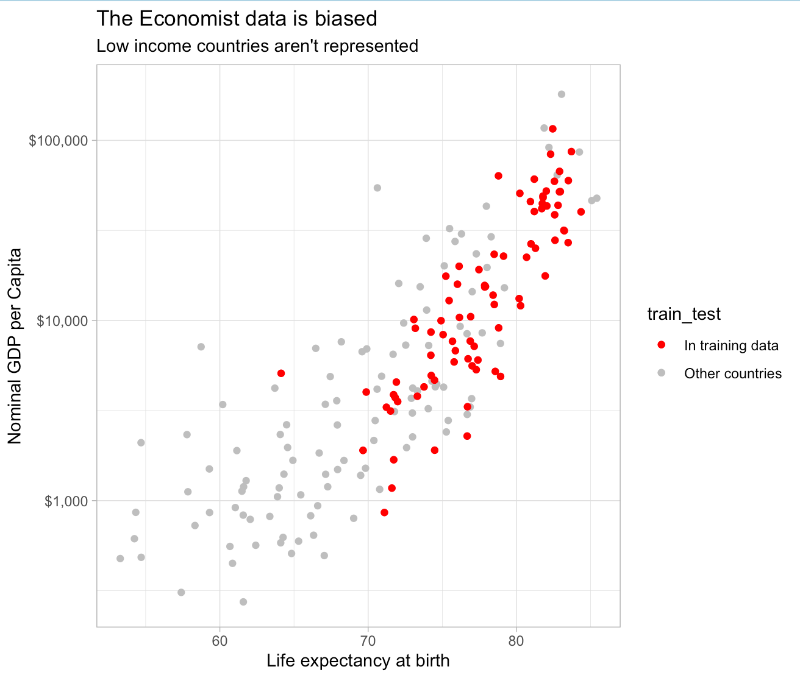

The Economist has published a model which estimates that Kenyans are only detecting 4-25% of the true deaths which can be attributed to Covid. I think this is a good opportunity to learn about why many machine learning models are problematic. I’m going to talk about this particular model, but I should note that I’ve only spent about ten hours looking at this problem and I’m sure the authors of this model are smart thoughtful people who don’t mean to mislead. That said, I think it’s an excellent example of how machine learning models can lend a sheen of credibility to things that are basically unsupported assertions. When someone says that their model says something, most people assume that means that it’s supporting that thing with hard data when it’s often just making unsupported assertions. It’s possible that the authors of this model have sound reasons about why they can make global excess death predictions based on a small unrepresentative sample of countries, but even so I think these observations are helpful for figuring out which models you should trust.
What got me started thinking about this subject was this tweet by one of the writers at The Economist suggesting that Kenya was radically undercounting deaths which have resulted from the Covid-19 pandemic.
Global statistical modelling done by The Economist estimates that the true number of those who died in Kenya as a result of the covid-19 pandemic is between 19,000 and 110,000, versus an official death toll of 4,746. https://t.co/kLlhEmBtUa
— Adrian Blomfield (@adrianblomfield) September 4, 2021
Before we begin it’s worth reflecting on the boldness of this statement. There are lots of smart people in Kenya whose whole job it is to count deaths, and the number they came up with is 4,746. Now of course this number could be wrong, but if you are going to suggest that it’s off by a factor of 20 you should have a lot of confidence in the model which generated those results and the data that that model is based upon. Sometimes models do produce surprising insights, but 99% of the time when your model produces an estimate that is intensely surprising to subject matter experts it’s because the model is wrong. Happily the Economist published their code and so we can look at it to see if these results make sense.
First, articulate the mechanism.
The first thing I do when evaluating a project like this is to step back and ask whether the overall goal of the model makes sense, and in this case it doesn’t. The idea behind this model is that some countries are publishing excess deaths numbers and others are not, so we can use various features of the countries that are publishing the numbers to estimate excess deaths in the countries that are not.
This doesn’t make sense to me because the mechanisms of excess death are not at all similar between countries. I don’t see what the EU’s excess death really teaches us about Kenya’s. For example one of the effects of Covid was a shortage of hydroxychloroquine, which is used to treat malaria. This probably caused zero deaths in places where malaria isn’t a major cause of death, but probably did cause some deaths in other parts of the world. Similarly, one of the causes of excess death in rich countries was disrupted ambulance service, which wouldn’t apply to parts of the world that don’t have these services. If the causes of death differ dramatically across countries, why would we think that a single model is going to do a good job at estimating excess death across the world?
We can also use our understanding of how Covid works to inform excess death priors. For example, what happens if a country like Kenya were really only able to identify one in every twenty Covid deaths? When a country can’t identify Covid deaths it’s usually because it is unwilling or unable to to test for Covid, which results in people dying without knowing their Covid status. What we’ve learned is that identifying Covid cases is the basis for all Covid policy and if you can’t identify how many people have died from the disease you’re also not going to be able to do anything else to control it. If left uncontrolled, the disease will infect everyone in the country, and kill some proportion of those people. All this should lead you to think that there’s a kind of bimodal expectation for Covid outcomes: if the government is competent then the excess deaths should be close to reported deaths, and if they’re not then you should expect them to be n% of the total population where n is the age-adjusted infection fatality rate.
This expectation should make you suspicious of The Economist’s excess death model because it produces estimates that are both too high and too low. The estimate for Kenya is way too high if you trust the state capacity at all, and way too low if you think that all 50 million people in Kenya were infected with Covid and never ended up accessing medical care.
Use interpretable models.
The Economist’s model is a gradient boosting machine (GBM) model with 160 (!!) features fit on data from about 80 countries (!!!). GBMs are powerful and accurate techniques for some problems, but I think it’s inappropriate for this one. This is a complex, non-linear model, which means that it’s difficult or impossible to understand exactly why it’s giving a particular answer to a particular case, and how its predictions would change if the parameters change. Gradient boosting machines are similar to neural networks, in that they can produce incredibly accurate models when provided the right problem and the right dataset, but can fall down embarrassingly when your data or problem definition is biased in some way. When you’re developing these models, you know how accurate the model is by some definition of “accurate,” but you never really know how the model works mechanically, and so it’s very hard to predict how it will behave on out-of-sample data. Additionally, this the model has a large number of features, and relatively few real samples which creates a big risk of over-fitting.
Traditional statistical models like OLS or multilevel models are interpretable in the sense that by looking at the model definition you can understand exactly how it would behave in new situations and can judge whether that behavior is sensible. For example, if you were to fit an OLS model to The Economist’s data, you might discover that it thought that the more doctors per capita a country had the more excess deaths they should have. Looking at the coefficients of the model would alert you to this nonsensical conclusion and cause you to reevaluate the problem. When you use black-box models like GBMs you never get that feedback. Since most journalists use models to write stories about the world, they should almost always use interpretable models because they provide explanations in addition to estimates.
Interrogate your training data.
When you build these types of models in industry you spend a huge amount of time worrying about whether your dataset and problem definition accurately reflects the world. The nature of complex non-linear models means that they can produce weird results on cases that weren’t represented in the training data. This is what causes neural networks to do things like misclassify images when single pixels get flipped, or think that everyone’s a white person. Since the model isn’t able to tell you why it makes particular decisions, the only way to ensure that it’s going to perform well out of sample is to be sure that the dataset truly reflects the world.
The Economist’s dataset does not truly reflect the world. In particular it contains data from only four African countries: South Africa, Egypt, Tunisia, and Mauritius – three relatively well-off coastal countries and one tiny island. All of the one billion people who live in the 53 countries between Egypt and South Africa are excluded from the data, and importantly are not that similar to those countries that were included in the training data. You can look at GDP per capita and life expectancy to see how biased the data is:

The model only saw one lowish life expectancy country (South Africa) and one country with a per-capita GDP under $1,000 (Tajikstan). The only way you can think that this data says anything about countries in Central and Eastern Africa is if you think that things like life expectancy and income are totally unrelated to how people die from Covid, which is a stupid thing to think. The ways that people die in poor countries are very different from the ways that they die in rich countries, and so you really need poor countries in your sample if you want to estimate excess deaths in those countries.
Despite this, The Economist went out and published a bunch of slick looking graphics about the “true death toll” in countries that are not remotely represented in the training data. These graphics provide a time series with some official-looking confidence intervals, and as far as I can tell the numbers are effectively manufactured by the modeling process. A complex non-linear model cannot produce reliable estimates for out-of-sample data that does not resemble the training data. Numerical estimates for these places are figments of the models imagination and have no tether to reality.
Don’t assume the argument.
One of the most interesting questions of the pandemic is why Africa has been spared. Virtually every analyst thought that Africans would suffer horribly from Covid in the same way that they have suffered from virtually every infectious disease. Low state capacity, poverty, and poor medical care is a recipe for a high mortality rate. Reported deaths in Africa have, however, stayed extremely low.

This has only grown more surprising over time. Africa has extremely low vaccination rates relative to North America and Europe, less natural immunity, and the circulating variants are infectious enough that even advanced economies like Australia are having trouble containing them.
It’s possible that this is just a feature of reporting and that the true death rate in Africa is higher than that of North America or Europe, but it’s also possible that there’s an unknown factor that protects Africans from Covid. For example, it could be explained by vitamin D, cross-immunity from some prior infection, or some selection effect related to high infant mortality. The interesting question here is whether it’s a lack of reporting or something else, because that something else could hold the key to treating Covid.
The Economist’s excess death model kind of assumes away this question. The assumption behind this model is that there’s a consistent, known relationship between various indicators and excess death and so there are no significant heterogeneities between countries. This is an assertion and since they have no data from any of the countries that exhibit these oddly low death rates, it’s an assertion that can’t be tested.
Don’t publish crappy estimates.
The response to these criticisms is probably something like “Well, this is the best we could do,” and I think that’s wrong. Models like this have the effect of putting a thin veneer of objectivity and science-y thinking over what’s basically an op-ed and most people do not have the skill to parse a modeling project and identify these problems. This is doubly true when you use a black-box model and don’t show your intermediate analysis. It’s irresponsible to publish these models without clearly communicating their limitations and suppressing predictions which you ought to know are pretty fishy. If you are not able to do that then the “best you can do” is not publish.